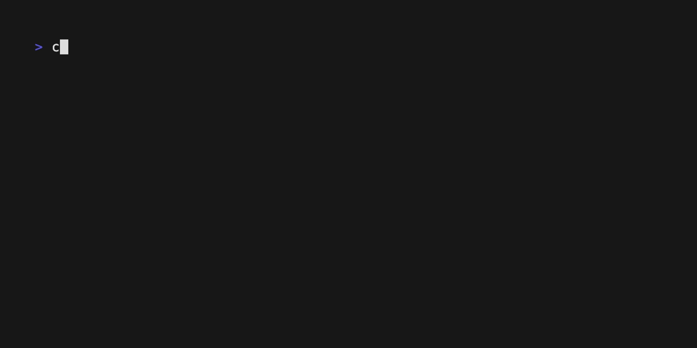
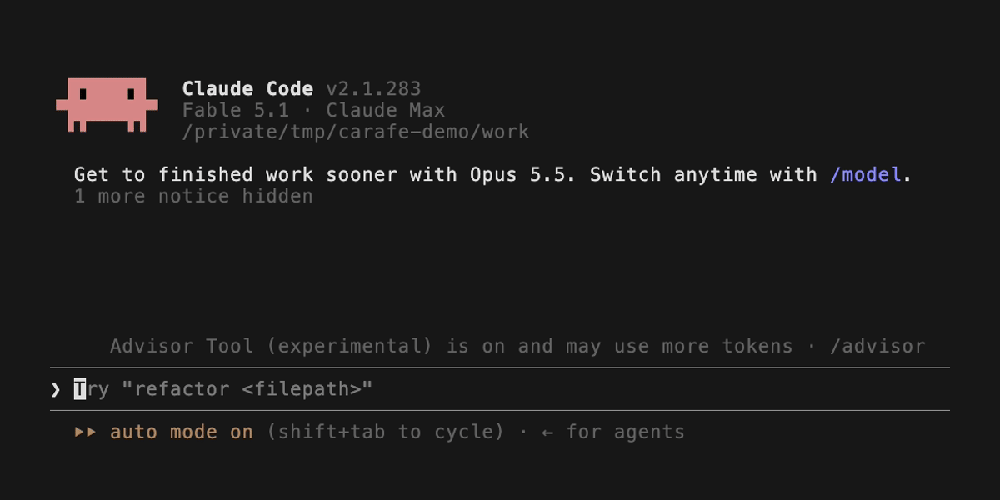

*
Carafe keeps your AI coding sessions on your own machine.
Find past work, replay its history, and hand off a session from Claude Code or Codex to any agent that can read a file.
claude code ──┐
├──▶ [carafe store] ──▶ handoff.md ──▶ any agent
codex ────────┘ on your disk claude code · codex
cursor · devin · …
*

Everything carafe does, in the menu bar app and the agent skill too, is a carafe command. The ones you will use:
- carafe list
- Recent sessions across tools, newest first
- carafe search "<terms>"
- Ranked recall across every captured session
- carafe show <id> --seq A-B
- A section of a session's trace, verbatim
- carafe key-moments <id>
- Decisions, dead ends and breakthroughs, with a resume block
- carafe ask <id> --file F
- Which chapters touched a file, what failed, which commands ran
- carafe handoff <id>
- A self-contained Markdown handoff, and the line to paste into the next agent
- carafe ui
- The local browser UI: search, sessions, replay, hand off
- carafe checkpoint / undo
- Snapshot a worktree, or restore files to an earlier point
- carafe skills install
- The Claude Code skill and the Codex prompt
- carafe update
- Update the CLI, checksums verified
# carafe --help lists everything else. Every command only reads, except capture, checkpoint, undo --apply, gc, skills, reflex install and update.
*
Install the standalone binary (macOS or Linux; no Node or Bun required):
curl -fsSL https://raw.githubusercontent.com/Carafehq/carafe/main/install.sh | sh
export PATH="$HOME/.local/bin:$PATH"
carafe list
carafe ui
Installing starts local background capture; use --no-watcher to opt out, or carafe service disable to stop it. No account or token needed. The installer verifies checksums. macOS and Linux, x64 and arm64.
*
The menu bar app shows capture status and hands off any session in two clicks: Hand Off → From Claude Code / From Codex → session. The line to paste into the next agent is copied for you.
# signed and notarized by Apple · unzip and open · the CLI is built in
*
Handoffs come from the tools carafe records, and go to any agent:
| tool | capture | search & replay | hand off from it |
|---|---|---|---|
| Claude Code | yes | yes | yes |
| Codex | yes | yes | yes |
Receiving a handoff needs nothing from carafe. A handoff is a self-contained Markdown file, so any agent that can read a file picks it up: Claude Code, Codex, Cursor, Windsurf, Devin, Gemini CLI, or a chat window you attach it to.
*
Gives your agents the same memory you have: a /carafe skill for Claude Code and a /carafe prompt for Codex. With it, an agent answers from the store instead of guessing:
* "What did we decide about the retry queue last week?"
* "Pick up where the other session left off."
* "Hand this off."

*
[never transmits]
Carafe is local-first. Your sessions stay on your machine, under ~/.carafe.
Secret-shaped text is masked before anything leaves the store.
Source session files are only read, never changed.
Update checks ask GitHub for the latest version and send no session content.
*
Apache-2.0. Read it, build it, change it: github.com/Carafehq/carafe
# Carafe Pro adds person-to-person sharing, PR stories and decision ledgers.
*